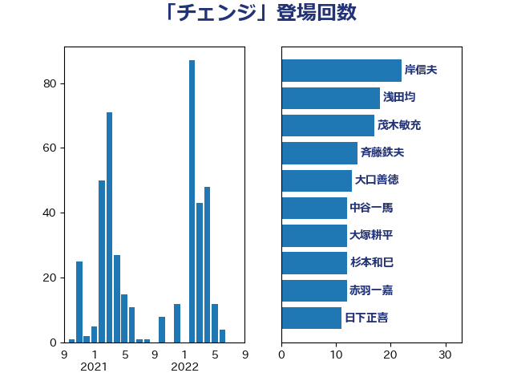

単語「チェンジ」

| 岸信夫 | 自由民主党 | 22 回 |
| 浅田均 | 日本維新の会 | 18 回 |
| 茂木敏充 | 自由民主党 | 17 回 |
| 斉藤鉄夫 | 公明党 | 14 回 |
| 大口善徳 | 公明党 | 13 回 |
| 中谷一馬 | 立憲民主党 | 12 回 |
| 大塚耕平 | 国民民主党 | 12 回 |
| 杉本和巳 | 日本維新の会 | 12 回 |
| 赤羽一嘉 | 公明党 | 12 回 |
| 日下正喜 | 公明党 | 11 回 |
| 萩生田光一 | 自由民主党 | 11 回 |
| 矢倉克夫 | 公明党 | 10 回 |
| 白石洋一 | 立憲民主党 | 7 回 |
| 山崎正恭 | 公明党 | 6 回 |
| 志位和夫 | 日本共産党 | 6 回 |
| 青山大人 | 立憲民主党 | 6 回 |
| 足立康史 | 日本維新の会 | 4 回 |
| 小林鷹之 | 自由民主党 | 3 回 |
| 川田龍平 | 立憲民主党 | 3 回 |
| 細田健一 | 自由民主党 | 3 回 |
| 自見はなこ | 自由民主党 | 3 回 |
| 西村智奈美 | 立憲民主党 | 3 回 |
| 今枝宗一郎 | 自由民主党 | 2 回 |
| 吉良よし子 | 日本共産党 | 2 回 |
| 土田慎 | 自由民主党 | 2 回 |
| 大西健介 | 立憲民主党 | 2 回 |
| 大西英男 | 自由民主党 | 2 回 |
| 山本剛正 | 日本維新の会 | 2 回 |
| 岸田文雄 | 自由民主党 | 2 回 |
| 柳ヶ瀬裕文 | 日本維新の会 | 2 回 |
| 浜口誠 | 国民民主党 | 2 回 |
| 玉木雄一郎 | 国民民主党 | 2 回 |
| 石川大我 | 立憲民主党 | 2 回 |
| 西田昌司 | 自由民主党 | 2 回 |
| 鈴木義弘 | 国民民主党 | 2 回 |
| 青木愛 | 立憲民主党 | 2 回 |
| 鬼木誠 | 立憲民主党 | 2 回 |
| 井上英孝 | 日本維新の会 | 1 回 |
| 伊藤孝恵 | 国民民主党 | 1 回 |
| 倉林明子 | 日本共産党 | 1 回 |
| 古川俊治 | 自由民主党 | 1 回 |
| 吉田久美子 | 公明党 | 1 回 |
| 吉田宣弘 | 公明党 | 1 回 |
| 吉田統彦 | 立憲民主党 | 1 回 |
| 堀場幸子 | 日本維新の会 | 1 回 |
| 大野泰正 | 自由民主党 | 1 回 |
| 守島正 | 日本維新の会 | 1 回 |
| 宮本周司 | 自由民主党 | 1 回 |
| 山下芳生 | 日本共産党 | 1 回 |
| 山下貴司 | 自由民主党 | 1 回 |
| 山添拓 | 日本共産党 | 1 回 |
| 山際大志郎 | 自由民主党 | 1 回 |
| 岡本三成 | 公明党 | 1 回 |
| 岩田和親 | 自由民主党 | 1 回 |
| 打越さく良 | 立憲民主党 | 1 回 |
| 末松信介 | 自由民主党 | 1 回 |
| 松沢成文 | 日本維新の会 | 1 回 |
| 柴田巧 | 日本維新の会 | 1 回 |
| 橋本岳 | 自由民主党 | 1 回 |
| 沢田良 | 日本維新の会 | 1 回 |
| 浅野哲 | 国民民主党 | 1 回 |
| 浜地雅一 | 公明党 | 1 回 |
| 浜田聡 | NHK党 | 1 回 |
| 渡辺創 | 立憲民主党 | 1 回 |
| 片山さつき | 自由民主党 | 1 回 |
| 石川昭政 | 自由民主党 | 1 回 |
| 礒崎哲史 | 国民民主党 | 1 回 |
| 福山哲郎 | 立憲民主党 | 1 回 |
| 紙智子 | 日本共産党 | 1 回 |
| 美延映夫 | 日本維新の会 | 1 回 |
| 蓮舫 | 立憲民主党 | 1 回 |
| 藤岡隆雄 | 立憲民主党 | 1 回 |
| 金子俊平 | 自由民主党 | 1 回 |
| 鈴木敦 | 国民民主党 | 1 回 |
| 青柳仁士 | 日本維新の会 | 1 回 |
| 高良鉄美 | 無所属 | 1 回 |
| 鰐淵洋子 | 公明党 | 1 回 |